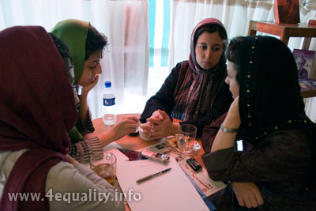
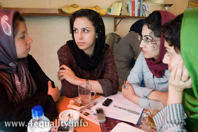
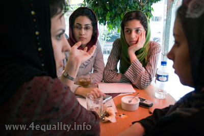

پذيرش > مقالات > گفتگو با اعضا > شهرهای کمپینی:همیار و مستقل
 میز گردی با کمیته شهرها میز گردی با کمیته شهرها

 شهرهای کمپینی:همیار و مستقل شهرهای کمپینی:همیار و مستقل
12 شهریور 1387 - تنظیم : نسیم سرابندی/ عکس : راحله عسگری زاده - نسخه قابل چاپ
روزهای خوب و پرشور آغاز کمپین را، پیوستن تک تک شهرهای ایران به این حرکت بزرگ شور و حالی دیگر می بخشید. روندی که تا امروز ادامه دارد. این مسیر گرچه با فراز و نشیب های زیادی توام بوده است
اما به نظر می رسد در یک فرآیند دوساله، کارنامه ای موفق را در کمپین از خود ثبت کرده است.
کمیته شهرهای کمپین، مانند دیگر کمیته ها در طول کار و برای ایجاد هماهنگی بیشتر مابین شهرها ایجاد شد و با همت و همیاری همه کمپینی ها در همه شهرهای فعال پیش می رود و زنجیره ای انسانی از برابری خواهی ترسیم می کند.
در آستانه سومین سالگرد کمپین یک میلیون امضا، صحبتی داشته ایم با اعضا کمیته شهرها در کمپین تهران که می خوانید.
مریم حسین خواه: کمیته شهرستان ها از چه زمانی و براساس چه نیازی شکل گرفت؟ آیا از ابتدا در این کمیته حضور داشتید؟
زینب پیغمبرزاده: در آغاز کار کمیته شهرستان ها بخشی از کمیته داوطلبان بود که با افزایش حجم کاری، به سه کمیته تقسیم شد: کمیته پیگیری داوطلبان، کمیته کارگاه ها و کمیته شهرستان ها.
یکی از علل نیاز به تشکیل چنین کمیته ای فضای بعد از بازداشت ها بود چرا که شهرستان ها منفعل و ارتباط ها کمتر شده بود، تعداد شهرستان ها هم بیشتر شده بودند که ارتباط سازمان یافته ای می بایست به وجود می آمد تا هم شهرستان ها با هم مرتبط شوند و هم اینکه تعامل آنها را با تهران حفظ کنیم. در آن زمان برخی از شهرها تا این حدی که امروز می بینیم توانمند نبودند و نیاز داشتند که ارتباط مستمر با تهران داشته باشند.اما با طی کردن پروسه توانمندسازی در حال حاضر همان شهرها می توانند شهرهای دیگر را هم توانمند کنند.
مریم حسین خواه: در خصوص روند و چگونگی فعالیت کمیته شهرستان ها در زمانی که بخشی از کمیته داوطلبان بود کمی توضیح می دهید.
زینب پیغمبرزاده: در آغاز کارهای کمیته داوطلبین به شکل فردی انجام می شد. بخشی از ارتباطی که قرار بود با داوطلبین صورت پذیرد مربوط به داوطلبین شهرستان ها بود که برای آنها کارگاه برگزار می شد و دفترچه فرستاده می شد.
کمپین با همکاری چند شهر آغاز به کار کرد، که اعضای کمیته داوطلبین به برخی از این شهرها سفر می کردند و کارگاه برگزار می کردند. در آن زمان جمع های نسبتا زیادی از فعالان ان جی اون ها در شهرهای مختلف کارشان را با کمپین شروع می کردند و در نهایت تلاش می کردیم این ارتباط به صورت ایمیلی تداوم پیدا کند. البته تعداد شهرها کم بود و با همین روش ارتباط با شهرستان ها را می شد جلو برد.

مریم حسین خواه: زمانی که تعداد شهرها افزایش یافت، چه تغییراتی به وجود آمد؟
زینب پیغمبرزاده: ابتدا بخشی از کمیته داوطلبین مسئول پیگیری شهرستان ها شد، کار از حالت فردی گروهی تر شد و شهرها را بین اعضای کمیته تقسیم کردیم. هر کسی مسئول بخشی از مناطق ایران شد و سعی کریم ارتباطات مستمری برقرار شود. بچه های شهرستان ها تأکید داشتند که می خواهند رابطه تهران با شهرها دو طرفه باشد. ممکن بود برخی از آنها تصور کنند که این یک رابطه یک طرفه و از بالا به پایین است. مخصوصا شهرهایی که به تدریج به کمیپن وارد می شدند امکان داشت تصور کنند کمپین کار را بدون برقراری ارتباط با گروه های مختلف آغاز کرده است. البته در آن شرایط هم نمی شد با همه گروه های فعال زنان ارتباط برقرار کرد. تقریبا همان روند قبلی دنبال شد. یعنی دقیقا کاری که کمیته شهرستان ها انجام می داد و الآن هم دنبال می کند ارتباط فعالین شهرستان ها را با فعالین تهران و با یکدیگر برقرار می کند. ارتباطی که اوایل مبتنی بر توامندسازی شهرستان ها توسط فعالین تهران در زمینه کمپین بود ،ولی الآن این شهرهای مختلف هستند که یکدیگر را توانمند می کنند و کمپین را پیش می بردند. در حال حاضر وبلاگ های شهرستان ها فعال اند، آن ها در نشست ها و سخنرانی هایی که برگزار می شود، حضور می یابند و بخش فعالی از کمپین شده اند.
مریم حسین خواه: دو سال پیش که کمپین اعلام موجودیت کرد برخی از شهرها مثل گرگان، شیراز، زنجان و تبریز بودند اما بعد کم کم شهرهای دیگر پیوستند. در مورد روند پیوستن شهرها و چگونگی شکل گیری ارتباط با کمپین توضیح می دهید. اشخاص ساکن شهرستان با شما تماس می گرفتند یا شما آنها را پیدا می کردید؟
زینب پیغمبرزاده: یکی از مشکلاتی که در کمیته شهرستان بود همین پیدا کردن فعالین شهرستان ها بود. اوایل هر کدام از فعالین کمپین فعالین اجتماعی ای را که در شهرهای دیگر می شناختند، فعالین زنان،دانشجویی، قومی، محیط زیست و ... به کمپین معرفی می کردند. از سویی دیگر فعالینی هم بودند که ناشناس بودند اما کمپین با ظرفیت اعتماد سازی بالا باعث می شد دو طرف به هم اعتماد کرده و رابطه شکل گیرد. مثلا به ایمیل کمپین میل می زدند و خواستار همکاری می شدند.
مریم حسین خواه: وقتی ایمیل می زدند پاسخ بچه های شهرستان چه بود و چگونه پیگیری می شد؟
زینب پیغمبرزاده: ما سعی می کردیم اطلاعات بیشتری به دست بیاوریم. اینکه فعالین آن شهر چند نفر هستند و چه تجربیاتی دارند و در چه زمینه ای کار کرده اند. حتی تلاش می کردیم از تهران خارج شده و با آنها دیدار کنیم. ولی الآن تلاش می کنیم که شهرهای مختلف با هم ارتباط گیرند. مثلا شهری مثل نجف آباد یا شهرکرد با فعالین اصفهان به دلیل مسافت کوتاه و اشتراک فرهنگی در ارتباط هستند. شهرهای مناطق کردنشین یا ترک نشین هم بیشتر با هم تماس دارند.

مریم حسین خواه: آیا این اتفاق دقیقا روی داده است؟
راحله عسگری زاده: بچه های سمنان و شاهرود را بچه های مشهد معرفی کردند، فعالین مشهد هم دانشجوهای زاهدان بودند که به مشهد بازگشتند.
زینب پیغمبرزاده: مثلا فعالین مازندران را فعالین گیلان حمایت کردند.
مریم حسین خواه: در این شهرها اول کارگاه برگزار می شود یا اینکه فعالین کار کمپین را شروع کرده اند و بعد درخواست برگزاری کارگاه می دهند؟
راحله عسگری زاده: گاهی اوقات فعالین از سایت بیانیه را پرینت گرفته و امضا جمع کرده اند و بعد با ما تماس می گیرند. خیلی وقت ها فعالینی بودند که علاقمندند اما نمی دانستند چگونه باید شروع کنند. در گذشته بعد از برقراری ارتباط با شهرها صدای کارگاه ها را برای آنان می فرستادیم. در مرحله بعدی برای برگزاری کارگاه به شهرها می رفتیم و قرار دیدار حضوری می گذاشتیم. الآن سی دی آموزشی کارگاه ها را تهیه کردیم. وقتی ارتباط می گیریم از آنان می پرسیم که چه قدر از کمپین می دانند؟ آیا سایت را خوانده اند؟ سایت، کمپین شهرهای دیگر را به آنان معرفی می کنیم و سی دی آموزشی و کتاب ارسال می کنیم. به این شکل نیست که صرفا کارگاه آموزشی کمپین برگزار کنیم. بعضی از شهرها کارگاه خشونت و یا لایحه می خواهند.
مریم حسین خواه: آیا چنین کارگاه های برگزار کردید؟
راحله عسگری زاده: بله، در یزد کارگاه شروط ضمن عقد، در رشت کارگاه حقوق شهروندی و در سمنان کارگاه لایحه برگزار شده است. در اصفهان هم کارگاه حقوق شهروندی برگزار شده. در سایت بخش «چگونه به کمپین بپیوندیم» بسیار کامل است و کسانی که خودشان کنشگر هستند از روی آن دستور عملی کار را یاد می گیرند.
مریم حسین خواه: در کارگاه، مکان و محل اقامت آموزشگرها چگونه هماهنگ می شود؟
راحله عسگری زاده: معمولا اعضای ساکن شهر همه چیز را هماهنگ می کنند. محلی برای اقامت و مکانی برای برگزاری کارگاه در نظر می گیرند. برخی از شهرها هم کارگاهشان یک روزه است و صبح آموزشگرها رفته و بعد از ظهر برمی گردند. در جایی مثل مشهد هم خود ما محل کارگاه را مشخص می کنیم. در خیلی از موارد فعالین هماهنگی را انجام می دهند و حتی از ما پذیرایی می کنند و سفر ما و برگزاری کارگاه به دلیل علاقمندی آنها اتفاق خوبی است.
مریم حسین خواه: آیا بعد از کارگاه ها کار کمیپن و جمع آوری امضا در بین گروه ها شکل می گیرد؟
راحله عسگری زاده: خیلی وقت ها کار کمپین پیش می رود و بعضی وقت ها هم می بینیم که به خاطر فضای بسته ی شهرستان ها مدت کوتاهی فعالیت برای کمپین ادامه می یابد و بعد پراکنده می شوند. اما بیشتر وقت ها به خاطر علاقه ی کنشگران و اینکه یک گروه هستند، شکل می گیرد. یعنی ار قبل شرکت کننگان با هم پیوند داشتند و گروه بودند.
زینب پیغمبرزاده: من فکر می کنم ، اوایل بیشتر گروه های جمعی در کمپین وارد می شدند ولی الآن آن گروه ها از هم پاشیده و اعضای جدیدی فعال شده اند. شهرهایی بودند که یک ان جی او کامل وارد کمپین شدند اما پس از مدتی کار، تصمیم گرفتند خارج شوند اما در همان شهر یا شهرهای اطراف، گروه و افراد جدیدی شروع به کار کرده اند. این یک فرآیند سیال است و مدام تغییر می کند. کنشگران جدیدی اضافه می شوند یا در میانه راه منصرف می شوند.
مریم حسین خواه: در زمینه زنان گروه بودند؟ آیا این کنشگران فعال حوزه زنان بودند یا با کمپین وارد فعالیت های زنان شدند؟
راحله عسگری زاده: طیف بسیار متفاوتی هستند. گاهی اوقات آدم های عادی هستند که هیچ فعالیتی نداشتند و با کمپین شروع کردند. بعضی وقت ها هم سابقه فعالیت داشتند. جدیدا دانشجوها فعال تر شدند اما این ویژگی هم دارند که برای مدت زمان مشخصی در شهر محل تحصیلشان ساکن هستند و پس از اتمام تحصیلات از آن شهر می روند.
زینب پیغمبرزاده: من فکر می کنم درست است که با پایان یافتن دوران تحصیل دانشجویان از به شهرهایشان برمی گردند، اما با جابجایی دانشجویان، کمپین هم با آنها جابجا می شود. مثلا برخی از دانشجویان ، کمپین را با خود از شهر محل تحصیلشان به شهر محل سکونت شان برده اند یا انرژی تازه ای به کمپین شهرشان تزریق کرده اند. می توان گفت حضور دانشجوها در کمپین به سیالیت کمپین کمک کرده است.
مریم حسین خواه: فضای غالب چه طور بوده و برخورد فعال های زن با کمپین چگونه بوده؟
راحله عسگری زاده: فقط در تبریز شاهد بودم فعالان زن وارد کمپین شده اند و اصولا همه شهرها فعال زن ندارند.
نسیم سرابندی: کردستان چه طور؟
راحله عسگری زاده: کردستانی ها فعال اجتماعی بودند اما وقتی به کمپین پیوستند صرفا فعال زنان نبودند. در مریوان حساسیت جنسیتی بیشتری بود.
زینب پیغمبرزاده: در میان کردها یک دست نبود. در شهرهای مختلف فعال هویت خواه، چپ، دانشجویی و زنان بودند.
نفیسه آزاد: من از ابتدای فعالیت کمیته شهرستان ها با آن نبودم و از شهریور پارسال وارد این کمیته شدم. تصور کلی من از فعالین شهرستان ها (و خود تهران) این است که آنها دو دسته اند. گروهی که از قبل فعالیت اجتماعی داشتند ولی مختص زنان نبوده و فعالیت در حوزه زنان خیلی کم دیده شده و هنوز هم کم است. گروه دوم کسانی هستند که شروع فعالیت اجتماعی شان با کمپین و زنان است. کمپین در این زمینه برد خوبی داشته چون کسانی را وارد حیطه فعالیت کرده که دغدغه داشتند اما کاری نمی کردند. درصد بالایی از فعالین شناخته شده حوزه زنان قبل از این در تهران بودند و حتی در شهرهای بزرگی مثل شیراز، تبریز و اصفهان نمود کمتری داشتند. در خصوص دسته ای که از قبل فعالیت اجتماعی داشتند هم، امروز افرادی را می بینیم که در حال حاضر فعالیتشان به کمپین و زنان اختصاص پیدا کرده است.
مریم حسین خواه: مشخصا شهرهایی که فعال زنان داشتند واکنشان نسبت به کمپین چه بوده؟ آیا استقبال کردند؟
نفیسه آزاد: مثلا در اصفهان قبل از کمپین فعالیت های پیشینی وجود داشت که دغدغه زنان هم داشتند و در این حوزه هم کم و بیش کار می کردند. کسی را نمی شناسم واکنش بسیار منفی نسبت به کمپین داشته باشد. ممکن است برخی از جلسات را نیایند و فعال تمام وقت نباشند ولی اینطور نبوده که بگویند من دیگر کار نمی کنم و همین حضور آنها هم بسیار مفید است. الآن کسانی که در اصفهان کار می کنند ارتباط نسبی با هم دارند. نشنیدم کلا کمپین را کنار بگذارند. یا به طور مثال در شهر دیگری یک گروهی قبلا فعالیت زنان داشتند و دودستگی به وجود می آید. یعنی گروهی می گویند کمپین خوب نیست چون از زمانی که وارد شد ما دودسته شدیم و نتوانستیم کار کنیم. با ورود کمپین بعضی ها کمپینی شدند و جمع ما از هم پاشید.
در کردستان فعال زنان بودند اما بیشتر زیر مجموعه فعالیت حقوق بشری بوده و مشخصا مستقل زنان نبوده است یا من در این زمینه اطلاعات کاملی ندارم. در کردستان فعالیت سیاسی پر رنگ تر است. وقتی کمپین را وارد آنجا می کنی و از حقوق زنان می گویی ممکن است متهم شوی به طرح مسئله ای که اولویت ندارد و ایجاد دو دستگی و یا کار کردن در جهتی که به درد مردم کرد نمی خورد ولی از یک جایی به بعد زنان حقانیتشان را ثابت کردند. و لزوم پرداختن مستقل به مسئله زنان به عنوان یک مسئله واجب را پذیرفته اند، کما اینکه در کمپین کردستان می بینیم.
زینب پیغمبرزاده: به نظر من پروسه ای که در مورد فعالین زن طی شد اینگونه بود که آنها با ان جی او ها وارد کمپین شدند. اما از زمانی که فشارها زیاد شد مخصوصا بعد از بازداشت 13 اسفند تصمیم گرفتند با کمپین کار نکنند. چون می خواستند هویت جمعی شان حفظ شود ولی در برخی شهرها هم مثل رشت هویت جمعی پیشین به نفع کمپین تضعیف شد. علت اصلی که در رشت برخی مخالف پیوستن به کمپین بودند این بود که فعالین آن اکثرا چپ هستند و اوایل کار کمپین هم بحث انتقاد های چپ ها نسبت به کمپین داغ بود و اما برخی از آن ها با وجود انتقادهایشان به کمپین پیوستند .
مریم حسین خواه: الآن چند شهر در کمپین فعال هستند؟
21 شهر: یزد، اصفهان، رشت، بابل، اراک، زنجان، کرمانشاه، شیراز، مشهد، ایلام، زاهدان، بابل، کردستان، سمنان، همدان، اردبیل و اهواز، بندرعباس
زینب پیغمبرزاده:تا جایی که یادم می آید در اولین سالگرد کمپین 20 شهر گروهی و 12 شهر فردی فعال در کمپین داشتیم.اما برخی از آنها دیگر فعال نیستند و در عوض شهرهای جدیدی فعال شده اند .
مریم حسین خواه: فردی و گروهی بودن فعالین کمپین در شهرها به چه معناست؟
نفیسه آزاد: در بیشتر شهرها اول یک نفر مطلع شده و بعد گروه شکل گرفته است اما در بعضی از شهرها دیگر گروهی وجود ندارد و حتی امکان دارد که فعالین تغییر کرده باشند اما گروه پا برجاست. مثلا در رشت هسته اصلی یک گروه هستند که آدم هایی به آن اضافه و یا از آن کم می شوند. اصفهان همیشه گروه بوده، همچنان هم گروه هست. یا مثلا در یزد بیشتر فردی بوده هر چند در ابتدا با گروه شروع شد.، کرمانشاه گروه است و مثلا شهرهایی مثل شهرکرد و اهواز و اینها فردی فعالیت می کنند.
زینب پیغمبرزاده: در یزد اول یک ان جی او بودند که بعد نخواستند با کمپین کار کنند و الآن فردی فعال هستند.
.

مریم حسین خواه: یعنی کمپین روند برقراری ارتباط با فعالین شهرستان ها را طی کرد اما خیلی فراز و نشیب داشت. در بعضی از شهرها حرکت شکل گرفت و در بعضی دیگر نه و در بیشتر شهرها در حال شکل گیری است.
نفیسه آزاد: حدود یک ماه پیش از کمیته شهرستان ها نا امید شده بودم چون فکر می کردم شهری باقی نمانده یک سری شهرها هستن که فعالیت خودشان را دارند، توانمندیهای لازم را هم دارند، چند نفر فعال فردی هم هستند که یک نفر پیگیری می کند. دفترچه و کتاب هم هر وقت لازم داشتند برایشان می فرستیم. اما کمپین هیچ وقت متوقف نمی شود و نمی توانی بگویی که دیگر کار ما تمام شده. همان موقع داوطلبین از شهرهای جدید آمدند و خواستار کارگاه شدند. حرکت های اجتماعی دیگری را تا به حال ندیدم که همچین ساز و کاری داشته باشند. نمی توانی فکر می کنی کار کمپین تمام شده. تازه آدم های جدیدی پیدا می شوند که مشتاق هستند و می خواهند کار کنند. مثلا داوطلب جدید میل می زند. کمپین اصولا جریان اجتماعی سیستم سازی نیست. قابل تعریف نیست و نمی توانی قانون آن را مشخص کنی.
زینب پیغمبرزاده: همه جنبش های جدید اجتماعی همین طور هستند. برخلاف حرکت های کلاسیک شبکه هایی با سیالیت بالا هستند و نمی توان روند و قانون آنان را تعیین کرد.
مریم حسین خواه: بالآخره کنشگران به نام کمپین به هم وصل شدند. فعالین شهرهایی که ما آنها را نمی شناختیم حالا با هم آشنا شدیم، گرچه ارتباط هم چندان قوی و مداوم نباشد اما به هر حال ارتباط شکل گرفت.
زینب پیغمبرزاده: یکی از مواردی که در آسیب شناسی جنبش زنان ایران همواره بر آن تاکید شده ،فقدان ارتباط کنشگران در سراسر ایران بوده ،اما کمپین توانسته تا حدودی این ضعف را برطرف کند. مثلا در جریان لایحه حمایت از خانواده می بینیم که فعالین اجتماعی که قبلا فعال نبودند و یا کنشگر بودند اما همدیگر را پیدا نمی کردند به سرعت به هم دست پیدا می کنند. بزرگترین دستآورد کمپین شبکه سازی فعالان زن بوده که کنشگران زیادی توانمند ساخته است. کنشگرانی که می توانند جنبش زنان را پیش ببرند.
مریم حسین خواه: فکر می کنید هزینه هایی که اعضاء کمپین در تهران و یا شهرهای دیگر پرداختن چه تاثیری بر ادامه فعالیت در شهرهای دیگر داشته است؟
زینب پیغمبر زاده: به نظر می رسد ،هر وقت که فشارهای امنیتی زیاد شده، روی فعالان زن و داوطلبان جدید مخصوصا در شهرستان ها تأثیر گذاشته است اما سیالیت کمپین باعث شده که هر بار انرژی جدیدی تزریق شود و کنار کشیدن بعضی از فعالین به دلیل برخوردها جبران شده است.
نفیسه آزاد: کسانی که در آغاز کمپین وارد شده بودند بعد از برخوردها منفعل شدند و آدم های جدیدی آمدند و به تدریج قدیمی ها هم دوباره برگشتند. کسانی که در حال حاضر وارد کمپین می شوند اولین تقاضایشان برگزاری کارگاه حقوق شهروندی است.این نشان می دهد آدم هایی هستند که حتی خودشان را برای پرداخت هزینه آماده کرده اند.
مریم حسین خواه: این مسئله نشان می دهد که داوطلبین جدید آگاهی بیشتری دارند.
نفیسه آزاد: بله، کسانی که الآن وارد کمپین می شوند با قدیمی ها فرق می کنند. نکته هیجان انگیز کمیته شهرستان ها آدم های جدیدی اند که خیلی پیگیر هستندو به آدم انرژی می دهند.
زینب پیغمبرزاده: من فکر می کنم طیف فعالینی هم که سراغ کمپین می روند تغییر کرده است. اوایل بیشتر فعالان زن بودند و الآن فعالان دیگر اجتماعی به کمپین می پیوندند به همین دلیل آمادگی پرداخت هزینه شان بالاتر است.مثلا در یک مورد چند تا دانشجو که به کمپین پیوستند بعد از بازگشت به شهرشان سریع وکیل گرفتند و بعد فعالیت شان را شروع کردند یعنی تا این اندازه قبول کرده اند که امکان دارد کمپین برایشان هزینه بر باشد.
مریم حسین خواه: الآن شهرها تا چه حدی مستقل شدند؟ شهرهایی هستند که خودشان کارگاه برگزار کنند و دفترچه را تأمین کنند؟ اوایل تأثیر پذیری شان زیاد بود و فقط یک سایت بود که مطالب در آن منتشر می شد. این رابطه چه قدر تغییر کرده است؟
نفیسه آزاد: حداقل می توانم بگویم در چشم انداز آدم ها تغییر ایجاد شده. مثلا همان کارگاه اول که حضور پیدا می کنیم به سرعت از ما می پرسند که چگونه کارگاه بعدی را خودمان برگزار کنیم؟ دفترچه را چه طوری چاپ می کنید؟ کارهایی که حتی به ذهن ما نرسیده که انجام دهیم اما آنها ایده های جدید دارند و حرکت های نو می کنند. در زمینه سایت، تغییر برای برابری شاید خیلی عمومی تر و فراگیرتر باشد اما سایت های شهرستان کاملا مستقل بودند و هستند و مطالبشان را خودشان تأمین می کنند. الگوهای سازماندهی نیروهایشان با ما بسیار متفاوت است. خودشان فکر می کنند و حتی جنس اختلافات آنها با هم فرق می کند. این نشان می دهد استقلال وجود دارد و این مسئله طبیعی است.چون به هرحال هر شهری هم به لحاظ مسافت جفرافیایی و هم اجتماعی –فرهنگی با دیگران فاصله دارد و نمی شود بگوییم الگویی که اینجا کارآمد است در شهر دیگری هم جواب می دهد.
اگر ما بتوانیم امروز از توانمندی سایتهای فعال کمپین، برای توانمندسازی سایت های دیگر استفاده کنیم بسیار خوب است. اگر راهی بیابیم که شهرهای توانمند دیگران را هم قوی تر کنند برده ایم، شاید یک روزی سایت تغییر برای برابری وجود نداشته باشد اما سایت های دیگر کمپین فعال باشند.
زینب پیغمبرزاده: یک دلیلی که سبب شد وبلاگ های کمپین ناگهان زیاد شوند این بود که شهرستانی ها می خواستند که سایت داشته باشند اما تجربه کمی از کار در فضای مجازی داشتند برای حل این مشکل کارگاهی برای آنان برگزار شد که خیلی کمک کرد. چون پس از آن به سرعت وبلاگ ها ساخته شدند و انرژی جدیدی به شهرهای دیگر داد. مثلا اراک که رفته بودیم خیلی کوتاه و ساده در مورد وبلاگ ساختن توضیح دادیم و آنها هم رسانه ساختند.
الآن اگر فعالین تهران یا رشت کمک کنند و کارگاه نوشتن یا روزنامه نگاری برگزار کنند رسانه های شهرهای دیگر هم قوی تر خواهند شد.
مریم حسین خواه: آیا استقلال کمپین در شهرهای مختلف، یعنی اختیار شهرها در اتخاذ راه خود و برقراری ارتباط با شهرهای دیگر از ابتدا به این شکل بوده و یا از مقطع خاصی تصمیم گرفته شد هر شهری مستقل باشد؟
زینب پیغمبرزاده: شهرهای مختلف با هم فرق می کنند. استقلال برای گروهی از آنان اهمیت داشت و توانایی آن را هم داشتند. اما برای برخی دیگر مهم بود اما نیاز به زمان داشتند تا به این قابلیت برسند. الآن هم شهرهایی هستند که خواهان ارتباط زیاد با تهران و شهرهای توانمند دیگر هستند چون به هر دلیلی نمی توانند کار کنند. کاملا بستگی به شهرها دارد.
نفیسه آزاد: تغییر خاص شکلی یا محتوایی در مقطع خاصی در رابطه کمیته شهرستان ها با کمپین صورت نپذیرفت. نمی توانیم بگوییم در یک مقطعی شهرها مستقل شدند و برخی در یک دوره زمانی وابسته بودند.
زینب پیغمبرزاده: به میزان توانمندی شهرها بستگی دارد مثلا شهری چون رشت به دلیل محیط اجتماعی مساعد و تجربه فعالین آن خیلی سریع نیازهای خود را برطرف کرد و به تهران وابسته نیستند. شهرهایی هم هستند که بعد از دو سال فعالیت در کمپین هنوز ترجیح می دهند که با کمپین تهران ارتباطشان گسترده باقی بماند. شهرهایی هستند که مایلند در همه موارد استقلالشان را حفظ کنند. این کاملا به فعالین شهرها مربوط می شود و به این شکل نبوده که ناگهانی کمپین های شهرستان ها احساس کنند که وابسته هستند و حالا باید مستقل بشوند.
مریم حسین خواه: پس کمیته شهرستان ها نقش تصدی گرایانه ندارد بلکه تسهیل گر است که می خواسته افراد شهرهای دیگر را با کمپین آشنا کند؟
نفیسه آزاد: من کلا تعریفم از کمیته های کمپین، کار تسهیل گری است. نه آیین نامه ای می نویسند و نه دخالتی در کار شهرستان ها می کنند. این طبیعی است که میزان بازدید از سایت تغییر برای برابری زیاد است. داوطلب از شهرهای دیگر به سایت مراجعه می کنند و باید آدم هایی باشند که پاسخگو باشند. حتی ایمیل های خیلی از شهرها را نمی خوانیم و مستقیما برای شهر مربوطه می فرستیم. بالآخره یک شبکه است و بردارها در جهت های مختلف برقرار است. حتی شهرستان هایی داریم که برای تهران و شهرهای دیگر دفترچه می فرستند و یا دوستان ما در شهرهای دیگر به ما داوطلب تهرانی معرفی می کنند
زینب پیغمبرزاده: برخی شهرها حتی به تهران و شهرهای دیگر داوطلب معرفی می کنند و ارتباطشان متقابل است. شهرهایی هم هستند که از اول علاقه نداشتند ما به آنها داوطلب معرفی کنیم و در عوض شهرهایی را می بینیم که از داوطلبان خیلی استقبال می کنند. کاملا بستگی دارد که چه قدر بخواهند ارتباطشان با تهران و شهرهای دیگر متقابل باشد. ممکن است فکر کنند که تهران می خواهد نگاه از بالا داشته باشد اما حتی در مواردی شهری که توانمند نیست و نیاز دارد به وسیله آنها توانمند شوند را حمایت نمی کنند.
نسیم سرابندی: روند جمع آوری امضا از شهرستان ها چگونه است؟
نفیسه آزاد: جریان جمع آوری امضا کمی فرق می کند. تا یه مدتی به یک شکل عمل می شد اما الآن به آن صورت نیست. مثلا امضاها را جمع می کردند، البته شهرهایی بودند که از اول امضاها را تحویل نمی دادند و می خواستند خودشان آنها را نگه دارند و بشمارند و می گفتند هر وقت شما اعلام کردید ما هم تعداد آنها را به کمیته مستند سازی می گوییم. بعضی از شهرها هم امضاها را به دست کمیته مستند سازی می رساندند. شهرهایی هم بودند که امضا ها را حتی می شماردند و بخشی از کار مستندسازی را انجام می دادند ولی اصلش را به کمپین تهران می دادند. بعد از مدتی که بحث کمیته مستندسازی و اعتماد به وجود آمد، در چند تا از شهرها شنیده شد که بچه ها برای تحویل امضاها سردرگم شده اند و نمی دانستند آنها را چه کار کنند و به چه کسی بدهند. به نظر من امضاها باید در آخر کار یک جا جمع شود. امضا یک چیز سمبلیک است و قرار نیست کسی بگوید من اینقدر امضا جمع کردم و دیگری کمتر و یا بیشتر از من امضا جمع کرده است. اگر شهری توان مستند سازی دارد می تواند نگه دارد. اما بعضی از شهرها توان سخت افزاری و یا نرم افزاری مستندسازی و جایی برای نگه داشتن امضاها ندارند. به نظرم هیچ فرقی هم نمی کند که امضاها به کجا تحویل داده شود، فقط امضاها باید ثبت و محفوظ شود و زمانی که لازم است یک جا جمع شود.
مریم حسین خواه :فکر می کنید اختلافات اعضا کمپین در تهران چه تاثیری رو شهرستان ها گذاشت ؟
زینب پیغمبرزاده: مسائل اخیر تهران و اختلافات به وجود آمده بیشتر از همه کمیته های کمپین تهران بر روی کمیته شهرستان ها تأثیر گذاشت، برخی از شهرستان ها احساس می کردند ،گروه های مختلف تهران به دنبال یارکشی هستند. برخی از آنها تصمیم گرفتند که با فقط یکی از گروه ها کار کنند.بنابراین ما ارتباطمان را با برخی از شهرها از دست دادیم . برخی شهرها هم میان دو گروه دچار سردرگمی شدند یا میان فعالین شان دو دستگی ایجاد شد .از سویی دیگر دو گروه در آن واحد در فضای به شدت امنیتی شهرستان ها با فعالین آنجا ارتباط برقرار می کنند. کارهای موازی انجام و فضای بی اعتمادی تشدید می شود و درگیری های داخلی افزایش می یابد. دغدغه من از ابتدای شکل گیری بحث های داخلی کمپین تهران این بود که کمیته شهرستان ها امکان دارد چه فرآیندهای پیچیده ای را طی کند و چه قدر سلب اعتماد و سرخوردگی در شهرستان ها نسبت به تهران شکل می گیرد. ایده هسته های خودبنیاد که ظاهرا قرار بود از شهرستان ها حمایت کند و سلطه کمپین تهران را کاهش دهد ،بیشتر از هر مسئله دیگری به کمپین در شهرستان ها ضربه زد و حتی شهرهایی که را که سعی کردند بی طرف باقی بمانند، را درگیر تشنج مداوم کرد.
مریم حسین خواه: الآن شهرهایی داریم که با هر دو گروه رابطه داشته باشند؟
نفیسه آزاد: اکثر شهرها با هر دو گروه ارتباط دارند. فعالین شهرستان ها نمی توانند بگویند ما یک گروه را حذف می کنیم چون از یک طرف اختلافات تهران به شهرها ربطی ندارد و دوم اینکه تنها نظر یک نفر مهم نیست چون دیگران هم هستند که با گروه دیگر ارتباط دارند. به نظرم برنامه ریزی و ارتباط تحت این شرایط درایت خاصی لازم داشت که ما نداشتیم، مثلا تا یک جایی فکر کردیم چرا شهرهای دیگر باید وارد مسائل تهران شوند و چیزی نگفتیم ، از یک جایی به بعد خوب آنها خودشان در جریان قرار گرفتند و اطلاعات پراکنده ای از این طرف و آن طرف پخش شد و همه دچار سردرگمی شدند، هنوز هم بعضی از بچه های شهرهای دیگر از من می پرسند ما که بالاخره نفهمیدیم چی شد و توضیح می خواهند، به نظرم ما اگر بتوانیم این مسئله را جا بیندازیم که هیچکس مجبور به انتخاب یکی از دو تا نیست خوب عمل کرده ایم و اینکه انتخاب یکی از دو گروه به این معنا نیست که ارتباط را با گروه دیگر از دست رفته بدانیم.
ارسال به
بالاترین
،
توییتر
،
فریندفید
،
فیسبوک
در همين بخش :
 8 مارس روزی که نمی توان از ما دریغ کرد 8 مارس روزی که نمی توان از ما دریغ کرد
با طلاق توافقی از حقارت و کتک و فحش رها شدم /گزارشی از دادگاه محلاتی: مریم مالک
تجمع مادران عزادار در رشت
تغییر ممکن است/ جلوه جواهری(26 روز پس از بازداشت کاوه مظفری)
گامهایی که با تزلزل نا آشنایند/ گرامی داشت چهلم ندا در رشت
ديگر بخش ها :
طرح یک میلیون امضا
|
مقالات
|
سایت نوشته ها
|
اخبار
|
گزارش كمپين
|
گفت و گو
|
علیه سکوت
|
كوچه به كوچه
|
نامه های شما
|
گزارش ویژه
|
گفتگو با اعضا
|
ویژه سالگرد کمپین
|
تصویر برابری
|
دل آرام علی
|
تریبون
|
مقالات
|
تاریخ شفاهی
|
خارج از چارچوب
|
کتابخانه
|
درباره کمپین
|
کمپین در شهرها
|
کمپین در بند
|
صدای تغییر
|
ویژه 22 خرداد
|
لایحه حمایت از خانواده
|
گالری
|
عشا مومنی
|
امیر یعقوبعلی
|
خدیجه مقدم
|
راحله عسگری زاده و نسیم خسروی
|
پروین اردلان،جلوه جواهری، مریم حسین خواه، ناهید کشاورز
|
زینب پیغمبرزاده
|
سعیده امین، سارا ایمانیان، محبوبه حسین زاده، ناهید کشاورز و همایون نامی
|
احترام شادفر
|
نسیم سرابندی زاده،فاطمه دهدشتی
|
وبلاگ مهمان
|
پرونده خرم آباد
|
دستگیری ها
|
مریم مالک
|
پرستو اللهیاری
|
مهرنوش اعتمادی
|
سمیه رشیدی
|
Other Languages
|
همراهان
|
«فراخوان کمپین ده روز با بهاره هدایت»
| English
|